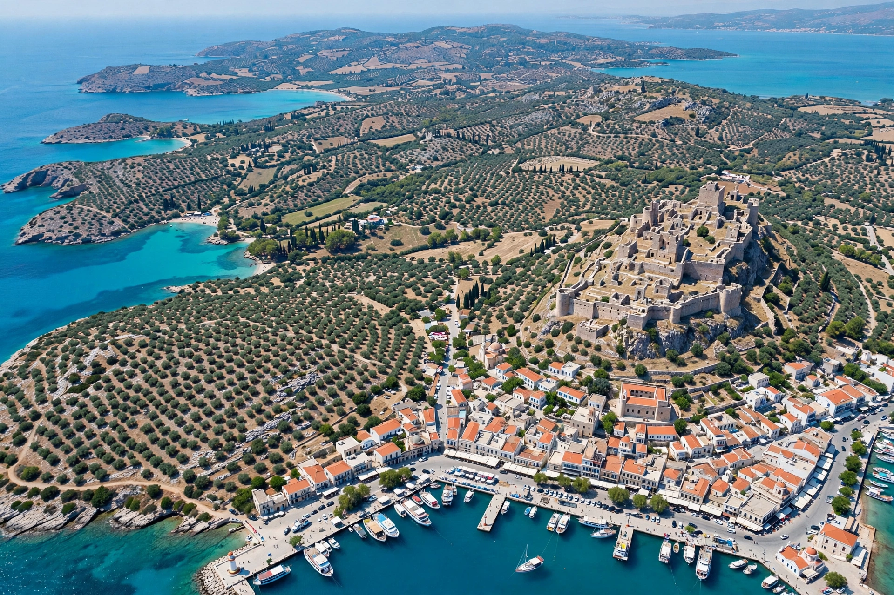

Lesbos or Lesvos is a Greek island located in the northeastern Aegean Sea, often called Mytilene after its capital. It has an area of about 1,634 km², making it the third-largest Greek island, and a population of roughly 83,000.

| Lesbos | |
|---|---|
| Country | Greece |
| Capital | Mytilene |
| Area | 1,634 km² |
Inhabited since prehistory, Lesbos flourished in the Archaic period as home of poets Sappho and Alcaeus and philosopher Theophrastus. The word "lesbian" derives from Sappho's poetry about women. The island passed through Roman, Byzantine, Genoese and Ottoman rule before joining Greece in 1912.
The island is known for olive oil, ouzo from Plomari, sardines from Kalloni and its petrified forest. In 2015–16 it was a major entry point in the European migrant crisis. See Sappho and Aegean Islands.